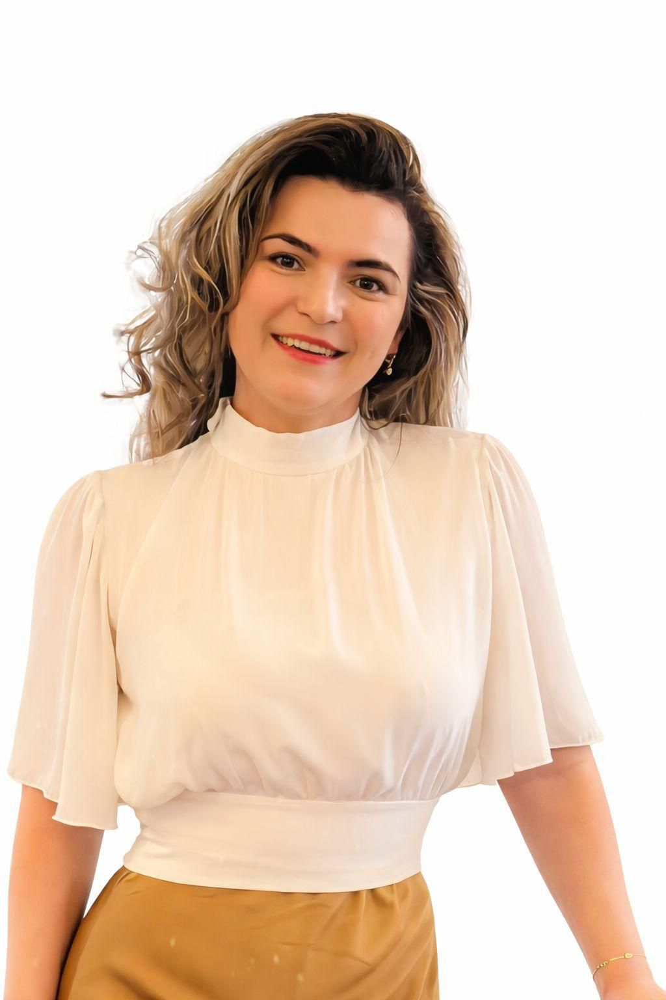

Professional with 9+ years managing complex cadastre and infrastructure projects across Romania, leading multidisciplinary teams and consistently delivering results on time and within legislative standards.

I bring a rare combination of technical expertise in geodesy and cadastre with strong operational management capabilities, backed by two bachelor's degrees and a Master's in Spatial Planning & GIS from the Technical University of Civil Engineering Bucharest.
Over 9 years I've scaled an organisation from 3 to 70+ specialists, managed portfolios of 50+ concurrent projects funded by European and national ANCPI programmes, and driven meaningful process improvements — including a 30% reduction in execution time and 70%+ automation of document processing workflows.
As a certified International Business Coach and accredited Personal Development Consultant, I lead with a people-first approach, building high-performance teams in technically demanding and logistically complex field environments.
Measurable impact across projects and organisations
Selected projects demonstrating operational excellence
Led the systematic property registration campaign covering 20,000+ properties in a mixed hill-and-mountain zone, managing complex logistics, multi-team coordination, and stakeholder relations with OCPI Cluj.
Designed and implemented the operational framework that scaled Geomatics Integrated Services from a 3-person startup to a 70+ specialist organisation managing concurrent national projects.
Contributed to national and international geodetic research projects at the Geodinamics Institute, conducting geospatial data analysis and co-authoring scientific documentation over 3.5 years.
Interested in working together? I'd love to hear from you.